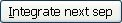

This window will allow you to draw the separatrices one by one instead of getting
all them drawn at the same time by the button .
You can also use this window if you feel that the separatrices drawn by
are too short or even missed.
The
first thing you must do is select a singular point owning at least one
separatrix. You simply need to click the left button of your mouse while
pressing the Shift key of your keyboard close to the singular point.
You do not need to be much close; the program will select the closest singular
point owning separatrices. Once this is done you will see the coordinates
(in the Poincare or Poincare-Lyapunov Disc if suitable) of the point written
in your window. You will see also how the
default value apppears. If you had already some separatrices of this singular point
drawn, you may notice that one of them has changed its colour to gold.
This is the first separatrix you will study.
-
You can modify the input by entering a new value.
It gives the distance we will move from the critical point in order to chose the first point
of the integration of each separatrix.
This value is defined in the Parameters
of Integration window. If you modify it here, this will not affect
the global value, but thw program will use it to integrate the separatrices
of the singular point you have chosen. It may be very useful when study
slow separatrices of degenerated singular points.
Remember always to press ENTER after entering the new value of epsilon!
-
The button will start computing the selected separatrix from the
beginning and using the epsilon value defined in this window. Once drawn you have the option
to continue integrating it with the button .
-
The button will select another separatrix of the same
singular point but will not integrate it yet. This gives you a chance to modify the
epsilon input per separatrix.
-
The button  will select another separatrix of the same
singular point and it will integrate it from the beginning and using the default
epsilon value. Once drawn you have the option to continue integrating it with the
button .
If you want to select another singular point, you do not need to leave this
window; you may simply click a new point in the Plot
window in the way described above.
Note:It is not possible to delete separatrices once they have been drawn.
In order to conveniently draw separatrices, you may also use the following keyboard shortcuts that work when the plot window is activated:
-
Shift+S: Start Integration of Separatrix (shortcut of )
-
Shift+C: Continue Integration of Separatrix (shortcut of )
-
Shift+N: Select Next Separatrix (shortcut of )
-
Shift+I: Integrate Next Separatrix (shortcut of )
 Back to the main page
Back to the main page
 Back to the windows page
Back to the windows page